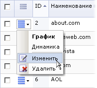

Эта форма применяется для создания описание новых поисковиков и редактирования существующих. Форма может быть открыта путём нажатия кнопки Добавить контекстной панели списка поисковых систем, либо выбора пункта Изменить меню действий:
| Кнопка | Описание |
|---|---|
| Список | Нажатие этой кнопки открывает форму со списком всех поисковых систем. |
| Добавить | Открывает текущую форму для добавления новой поисковой системы. Отображается только при редактировании существующего поисковика. |
| Удалить | Удаляет открытую для правки поисковую систему. Отображается только при редактировании существующего поисковика. |
| Поле | Описание |
|---|---|
| Активен | Флаг активности поисковой системы. Хиты активных поисковых систем распознаются и регистрируются в системе. |
| Проверять лимит активности | Если флаг не установлен, и в настройках модуля установлена проверка на превышение лимита активности клиентом, с данного поисковика снимаются все ограничения на превышение установленного лимита активности. |
| Сохранять хиты | Если флаг установлен, адреса проиндексированных страниц сохраняются в базе данных. |
| Включать в круговую диаграмму индексации по умолчанию | Если флаг установлен, данные по этой поисковой системе включаются в круговую диаграмму индексации сайта. |
| Сколько дней хранить хиты | Количество дней для хранения адресов проиндексированных страниц. Если параметр не указан, используется значение, задаваемое в настройках модуля статистики (параметр Сколько дней хранить хиты поисковиков). |
| Сколько дней хранить динамику | Количество дней для хранения динамики индексации сайта. Если параметр не указан, используется значение, задаваемое в настройках модуля статистики (параметр Сколько дней хранить динамику поисковиков). |
| Наименование | Наименование поисковой системы (например, Google). |
| UserAgent | UserAgent поисковой системы (например, Googlebot/). |
| Домен | Домен поисковой системы без www (например: google.com, google.com.ru, google.co.uk, search.yahoo.com и т.д.). |
| Переменная | Имя переменной, в которой передается искомая фраза (см. ниже). |
Кнопка Сохранить позволяет сохранить свойства и выйти, кнопка Применить - сохранить и остаться в форме, а кнопка Отменить - выйти из формы без сохранения.
Переменные, в которых содержатся искомые фразы, определяются следующими правилами.
Например, при поиске на www.google.com слова
bitrix поисковая система вернет результаты поиска на странице http://www.google.ru/search?complete=1&hl=ru&q=bitrix&lr=&aq=null. В данном случае, искомое нами слово содержится в параметре
q, поэтому для домена www.google.com мы устанавливаем переменную q.
В дальнейшем эта переменная будет использована при выделении поисковых фраз. Аналогично, для выделения поисковых фраз
- при поиске в найденном. Например, мы ищем на Яндексе слово
bitrix, а затем в найденном ищем слово download. Результаты поиска будут выданы на странице
http://www.yandex.ru/yandsearch?text=download&holdreq=bitrix&holdreq_manually=true. Здесь поисковые фразы
содержатся в параметрах holdreq и text. Указываем эти параметры через запятую, и в дальнейшем поисковые фразы будут выделяться
в виде bitrix/download, т.е. через символ "/" и в соответствующем порядке.
| © «Битрикс», 2001-2008, «1C-Битрикс», 2008 | 1С-Битрикс: Управление сайтом |